🌿 All Grass Pals in Palworld (1.0)
There are 48 grass-element Pals in Palworld 1.0 — 26 can be caught in the wild and 22 are breed-only. Sorted by Paldeck number. Click any Pal for its full breeding guide.
Complete Grass Pal list
| # | Pal | Element | Work suitability | How to get |
|---|---|---|---|---|
| #4 | 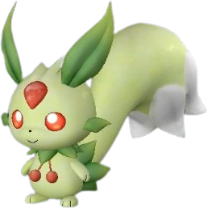 Lifmunk | Grass | Planting 1, Handiwork 1, Gathering 1, Lumbering 1, Medicine Production | ✅ Wild |
| #10 | Herbil | Grass/Neutral | Planting 1, Gathering 1, Transporting 1 | 🥚 Breed only |
| #12 | 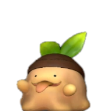 Gumoss | Grass/Ground | Planting 1 | ✅ Wild |
| #14 | Clovee | Grass/Neutral | Planting 1, Gathering 1 | 🥚 Breed only |
| #23 | 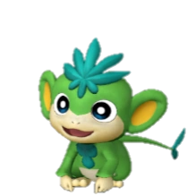 Tanzee | Grass | Planting 1, Handiwork 1, Gathering 1, Lumbering 1, Transporting 1 | ✅ Wild |
| #34 | 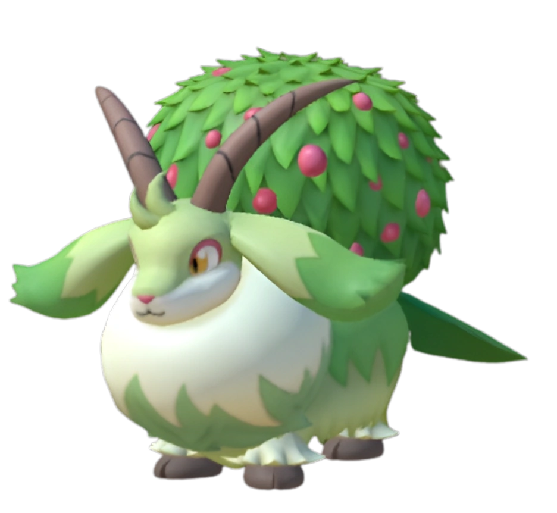 Caprity | Grass | Planting 2, Farming 1 | ✅ Wild |
| #44 | Ribbuny Botan | Grass | Planting 2, Handiwork 2, Gathering 2, Transporting 1 | 🥚 Breed only |
| #57 | 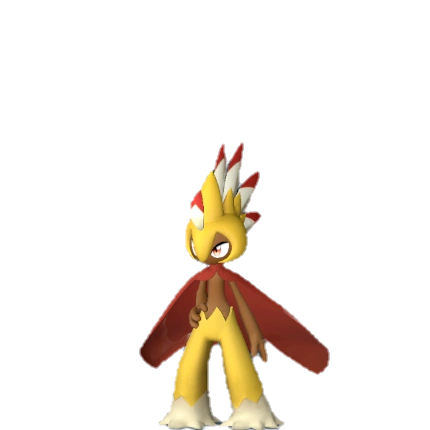 Robinquill Terra | Grass/Ground | Handiwork 3, Gathering 3, Lumbering 2, Medicine Production 2, Transpor | ✅ Wild |
| #60 | 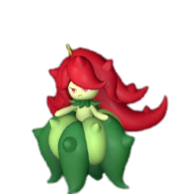 Bristla | Grass | Planting 2, Handiwork 2, Gathering 2, Medicine Production 2, Transport | ✅ Wild |
| #61 | 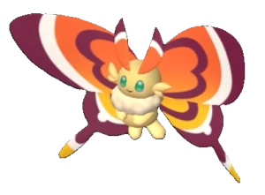 Cinnamoth | Grass | Planting 2, Gathering 2, Medicine Production 2 | ✅ Wild |
| #66 | 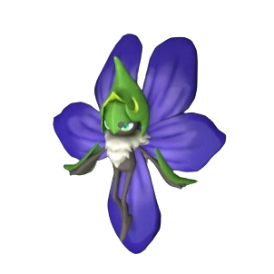 Vaelet | Grass | Planting 3, Handiwork 3, Gathering 3, Medicine Production 3, Transport | ✅ Wild |
| #67 | 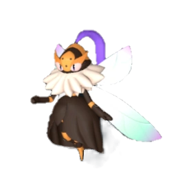 Beegarde | Grass | Gathering 3, Farming 3, Planting 2, Handiwork 2, Lumbering 2, Medicine | ✅ Wild |
| #68 | 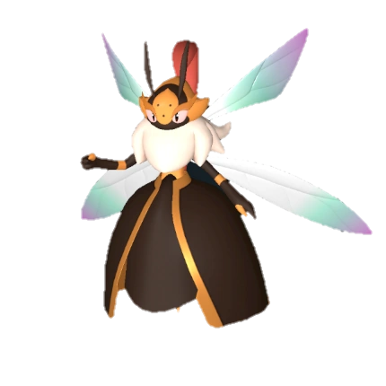 Elizabee | Grass | Planting 4, Handiwork 4, Gathering 4, Medicine Production 4, Lumbering | ✅ Wild |
| #76 | 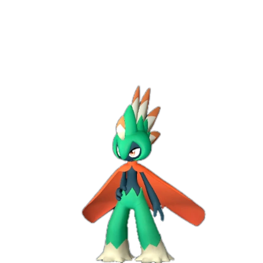 Robinquill | Grass | Handiwork 3, Gathering 3, Planting 2, Lumbering 2, Transporting 2, Med | ✅ Wild |
| #77 | 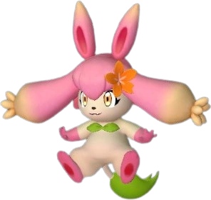 Flopie | Grass | Planting 2, Handiwork 2, Gathering 2, Medicine Production 1, Transport | ✅ Wild |
| #81 | 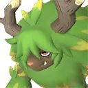 Elgrove | Grass | Planting 3, Lumbering 3, Transporting 3, Gathering 2, Mining 2 | 🥚 Breed only |
| #84 | Dinossom | Grass/Dragon | Planting 3, Lumbering 3 | ✅ Wild |
| #87 | 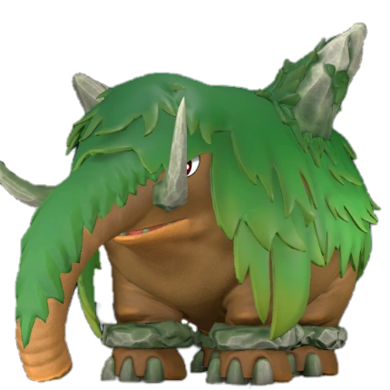 Mammorest | Grass/Ground | Planting 4, Lumbering 4, Mining 4 | ✅ Wild |
| #89 | 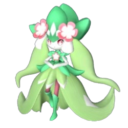 Petallia | Grass | Planting 4, Medicine Production 4, Handiwork 3, Gathering 3, Transport | ✅ Wild |
| #89 | 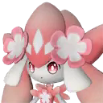 Petallia Ignis | Grass/Fire | Kindling 4, Medicine Production 4, Handiwork 3, Gathering 3, Transport | 🥚 Breed only |
| #90 | Leafan | Grass | Planting 3, Handiwork 3, Gathering 3, Transporting 2 | 🥚 Breed only |
| #93 | 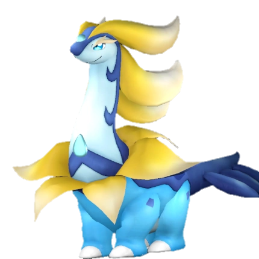 Broncherry Aqua | Grass/Water | Watering 5 | ✅ Wild |
| #100 | Needoll | Grass | Planting 3, Gathering 3, Transporting 1 | 🥚 Breed only |
| #100 | Needoll Noct | Dark/Grass | Planting 3, Gathering 3, Transporting 1 | 🥚 Breed only |
| #102 | Mossanda | Grass | Lumbering 4, Transporting 4, Planting 3, Handiwork 2 | ✅ Wild |
| #102 | 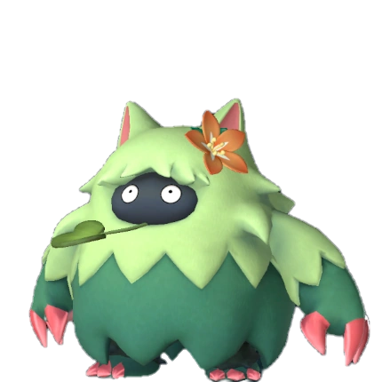 Wumpo Botan | Grass | Transporting 6, Lumbering 5, Planting 3, Handiwork 3 | ✅ Wild |
| #106 | Palumba | Grass | Mining 5, Planting 4, Gathering 4 | 🥚 Breed only |
| #108 | 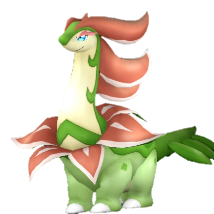 Broncherry | Grass | Planting 5 | ✅ Wild |
| #110 | 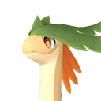 Braloha | Grass/Ground | Planting 5, Gathering 5, Mining 3 | 🥚 Breed only |
| #113 | 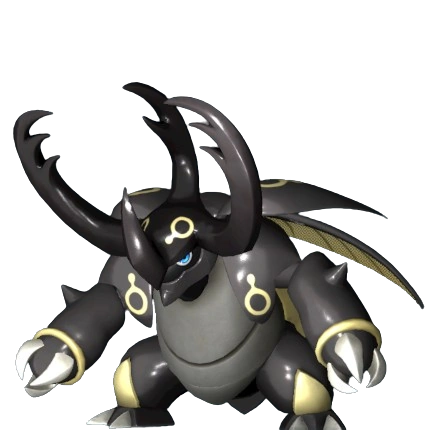 Warsect | Ground/Grass | Transporting 5, Lumbering 4, Planting 3, Handiwork 3 | ✅ Wild |
| #113 | Warsect Terra | Ground/Grass | Mining 5, Transporting 5, Handiwork 2 | 🥚 Breed only |
| #118 | Shroomer | Grass | Planting 3, Gathering 3, Farming 3, Handiwork 2, Lumbering 2 | ✅ Wild |
| #124 | 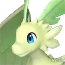 Quivern Botan | Dragon/Grass | Planting 5, Gathering 4, Transporting 4, Mining 3, Handiwork 2 | 🥚 Breed only |
| #125 | Lullu | Grass | Planting 3, Handiwork 3, Medicine Production 3, Gathering 2 | ✅ Wild |
| #136 | 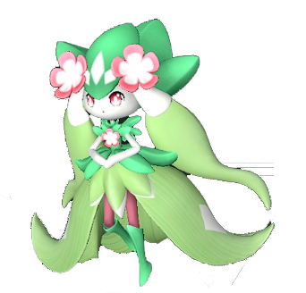 Carnibora | Grass | Planting 6, Handiwork 4, Gathering 4, Transporting 2 | 🥚 Breed only |
| #138 | Dualith | Ground/Grass | Mining 6, Transporting 6, Lumbering 5, Planting 3, Gathering 3 | 🥚 Breed only |
| #144 | Shroomer Noct | Grass/Dark | Planting 3, Handiwork 3, Gathering 3, Lumbering 2 | ✅ Wild |
| #147 | 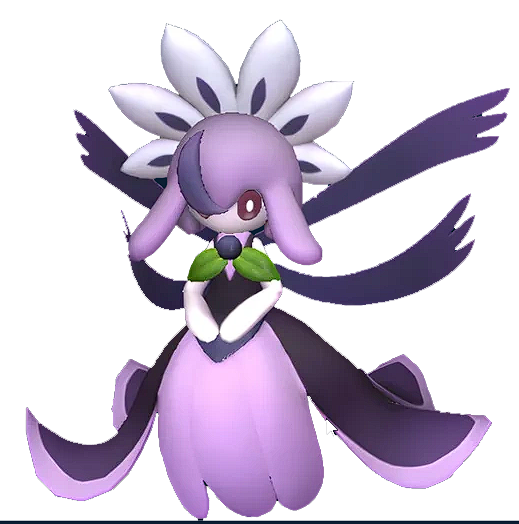 Prunelia | Grass/Dark | Planting 3, Medicine Production 3, Gathering 2, Handiwork 1, Transport | ✅ Wild |
| #148 | 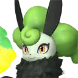 Nitemary Botan | Grass | Handiwork 4, Planting 3, Transporting 2 | 🥚 Breed only |
| #152 | 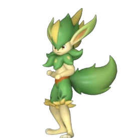 Verdash | Grass | Handiwork 5, Gathering 5, Planting 4, Lumbering 3, Transporting 3 | ✅ Wild |
| #164 | Souffline | Grass | Planting 2, Transporting 2 | 🥚 Breed only |
| #173 | 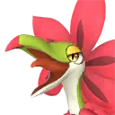 Tropicaw | Grass | Planting 5, Gathering 5 | 🥚 Breed only |
| #175 | 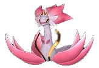 Ophydia | Grass/Water | Planting 7, Watering 5 | 🥚 Breed only |
| #179 | Mycora | Grass | Planting 6, Medicine Production 6, Handiwork 4, Gathering 4 | 🥚 Breed only |
| #186 | 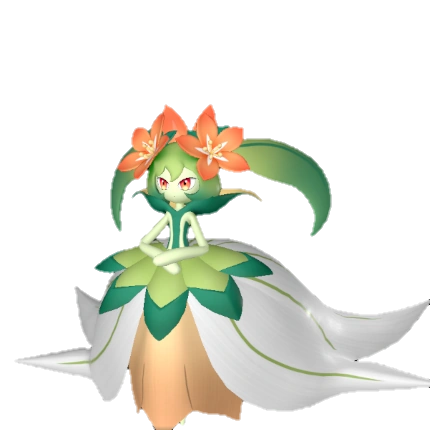 Lyleen | Grass | Planting 7, Gathering 6, Handiwork 5, Medicine Production 5 | ✅ Wild |
| #193 | Silvance | Grass | Medicine Production 8, Planting 6, Handiwork 6, Gathering 4, Transport | 🥚 Breed only |
| #194 | 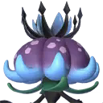 Dandilord | Grass/Dark | Planting 8, Handiwork 6, Medicine Production 6, Gathering 5, Transport | 🥚 Breed only |
| #10002 | Grass | Transporting 1 | 🥚 Breed only |
🥚 Want a breed-only Pal? The PalTool reverse breeding calculator finds the shortest path from wild-catchable parents.
Work rankings: ⛏️ Mining · 🔥 Kindling · 🔨 Handiwork · 🪓 Lumbering · 📦 Transporting · 🌱 Planting · 💧 Watering · 🧺 Gathering · ⚡ Electricity Generation · 💊 Medicine Production · ❄️ Cooling · 🐄 Farming
Pals by element: 🔥 Fire · 💧 Water · 🌿 Grass · ⚡ Electric · ❄️ Ice · 🪨 Ground · 🌑 Dark · 🐉 Dragon · ⚪ Neutral
Data sourced from Palworld 1.0 game files. Last updated: July 2026.